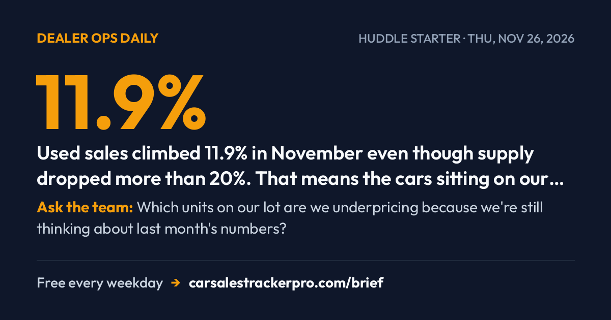

Used-Car Supply Craters While Sales Climb 11.9%


Used-car supply tightened again in November while sales kept climbing — scarcity, not discounting, is driving deals right now, and a new round of tariffs could push parts and reconditioning costs up before year's end.
☕ HUDDLE STARTER · read it aloud in 60 seconds
11.9% — Used sales climbed 11.9% in November even though supply dropped more than 20%. That means the cars sitting on our lot right now are worth more to the next buyer than they were last month.
Ask the team: Which units on our lot are we underpricing because we're still thinking about last month's numbers?
⚖️ Protect the deal
Washington Readies New Tariffs on Auto Parts and Materials
The U.S. is preparing tariffs of 15% to 35% on goods from China, the EU and 12 other trading partners following a Section 301 probe into manufacturing capacity, according to WardsAuto (Nov. 25); the proposal is not yet finalized. The levies target parts and materials used in production, not finished vehicles.
Use it today: If a customer asks why parts and accessory prices are creeping up, you've now got a real answer beyond "inflation." Flag any trade-in with overseas-sourced aftermarket parts for a fresh appraisal before values move.
Sources: WardsAuto
💰 The desk & the box
Genesis of Atlanta Moves Desking and F&I Onto One Platform
Genesis of Atlanta adopted NETSOL's Transcend Retail platform to unify desking, digital-to-showroom workflows and F&I into a single system, aiming to cut paperwork bottlenecks and speed deal flow, according to AutoSuccess (Nov. 24).
Use it today: Ask your desk manager what's actually slowing deal turnaround right now — a paperwork handoff or a system that doesn't talk to F&I. That's the gap stores like this one are closing first.
Sources: AutoSuccess
🚗 Market numbers
Used Inventory Just Got Tighter — And Sales Still Climbed
Used-vehicle sales rose 11.9% in November even as supply fell 21.2%, according to AutoVision's November report, with every age group of inventory shrinking. Tighter lots didn't slow sales — they compressed them into fewer, faster-moving units.
Use it today: Lead with honest scarcity — "this exact trim is one of the last we'll see for a while" lands harder than a discount pitch when the lot itself is thinning.
Sources: AutoSuccess
Cox Automotive Sees November New-Vehicle Sales Sliding to 15.8M SAAR
Cox Automotive's Dashboard forecasts November new-vehicle sales at a 15.8 million seasonally adjusted annual rate, down 10.3% from October and 7.3% year-over-year to roughly 1.20 million units. Slower new-lot volume is one reason used inventory is tightening faster.
Use it today: If a new-car up stalls on availability or price, pivot them to a comparable used unit before the lot thins further — framed as fact, not pressure.
Sources: CBT News
🏬 The floor
The Dealer Groups Getting AI Right Share One Habit
Two stores in the same dealer group can run the same AI tool and get different results — the difference is training and process, not the software, according to research covered by CBT News. Separately, a group told Auto Dealer Today it used AI to boost productivity without cutting a single job, retraining staff into new roles instead.
Use it today: If your store rolled out an AI tool and nobody's using it right, the fix is probably a 15-minute training huddle, not a new vendor. Ask what one task AI could take off your plate this week.
Sources: CBT News · Auto Dealer Today
🛠️ Tool of the day (Sponsored)
CarSales Tracker Pro: The iOS app for tracking every deal, commission, and spiff — know your real number before payroll does. Built by the team behind this newsletter.
If today's issue gave you something to say in the morning meeting, forward it to someone else on your floor who could use it too.
Commission calculator
Estimate this month's check from units, gross, pack and minis.
ComparisonPay plan comparison
Put two plans side by side under the same month.
Free trackerTrack every deal
Log each car and watch your month-to-date pay climb.